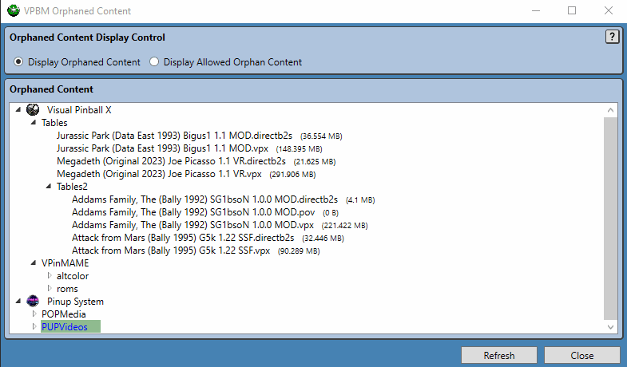

Orphaned Content Manager
Virtual Pinball Backup Manager - managing your backups, one game at a time
Virtual Pinball Backup Manager - managing your backups, one game at a time
Over time as games are installed and removed, often files and content are left behind. The Orphaned Content Manager dialog aims to assist with this by identifying game content not associated with the currently installed games.
To achieve this, the Orphaned Content Manager dialog presents a view aiming at displaying all potential game content that has been determined not to match currently installed games and provides the user the option of deleting items from this list, marking them as required, or ignoring them. Each content item determined to be orphaned is displayed, followed by an indication of its size on disk to assist with managing this content.
A Refresh button is provided at the bottom of the dialog. Pressing this button will re-scan the system to identify all content used by games currently installed within Pinup system, and subsequently re-check for orphaned content. The re-scan may impact on games that should be visible in the main VPBM window, this window will be refreshed as the strong>Orphaned Content Manager dialog is closed to reflect any changes.
The main function of the Orphaned Content Manager dialog is to present potential orphaned (or unused) game files to the user to allow them to make a decision on whether or not they should be deleted. This information is displayed in the form of a standard windows tree-view control, similar to what used by the Selected Game Content Panel.
Orphan files are determined by processing all built in file filters and identifying files that could match to these if variables used within them are wild-carded. More information on these filters is found in the Inbuilt Filters section of Application Settings. Any content used by games currently installed in Pinup system are not considered as orphaned content, similarly, games not yet installed within Pinup System will be considered as orphans.
The example below shows the user selecting a folder full of 5 potential table files for deletion. As can be seen, selected content is highlighted in blue to make clear what content any potential operation would impact. Note that folders are not deleted when they are part of a path to other content (as they may contain other used content), so in this case the folder Tables2 would not be deleted.
A request to delete files results in a dialog to allow the user to confirm the deletion request. In the example shown, the user opts to keep the files instead.
Requests to delete content re done via the right mouse button context menu.
While best attempts are made, not all content identified as orphan content will require deletion. One example of this would be games not yet installed in Pinup System that the user intends to keep or install down the track.
To address this situation, users can exclude content from the main list of potential orphaned content by using the Add Item(s) to Allowed Orphans right mouse button context menu. This option hides selected content, to allow users to focus on other content. This process is completely reversable as seen in the example below.
In the example, 5 files are initially marked as allowed, and immediately hidden from the list of orphaned content. The user then reverses this change by using the Display Allowed Orphan Content radio button to change the view to a tree-view displaying the list of orphaned content that the user has marked as allowed, which allows users to use the right mouse context menu to clear files that have been marked as allowed.